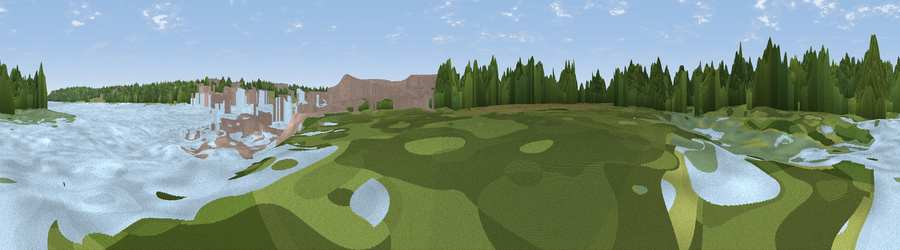

Viewpoint near Hamble-le-Rice
#45531 in England · top 94% of its area beats it · near Hamble-le-RiceWhere it is
The exact computed spot (SU 48400 06195). Click the marker for map links.
The view, rendered

A 360° render of this exact spot computed from the terrain model, tree cover and land cover — summer colours, afternoon light, calibrated against photographs of famous viewpoints. Real trees, hedges and buildings will differ in detail.
The panorama
Grey silhouette: terrain skyline in each direction (720 bearings, Earth curvature and refraction included). Dashed green: skyline with trees (+15 m) and buildings (+8 m) as obstacles. Blue strip: how far the ground is visible on each bearing.
Where the view opens
Wedge length = distance to the farthest visible ground on that bearing (vegetation-aware). Rings at 10, 25 and 50 km.
What fills the view
34% water · 34% woodland · 14% grassland · 11% built-up · 6% wetland
Angular shares of the visible panorama (visual magnitude), not map area. Landscape diversity 0.63 (0–1 Shannon).
Key numbers
More beautiful places nearby
The staircase of upgrades: each row has a higher view potential than everything closer. Driving times are estimates from straight-line distance, calibrated against real road routing — check an actual route before setting out.
| Place | Direction | Drive | Score |
|---|---|---|---|
| Viewpoint near Netley | WNW · 2 km | ~6 min | 25.7 |
| Viewpoint near Lower Swanwick | N · 5 km | ~11 min | 28.1 |
| Viewpoint near Stubbington | SE · 6 km | ~13 min | 40.4 |
| Crockerhill | ENE · 10 km | ~20 min | 44.2 |
| Viewpoint near Gurnard | S · 12 km | ~22 min | 45.1 |
| Viewpoint near Porchfield | SSW · 14 km | ~25 min | 45.7 |
| Viewpoint near Porchfield | SSW · 15 km | ~26 min | 54.2 |
| Viewpoint near Southwick | E · 15 km | ~27 min | 74.3 |
50.85325, -1.31379 · source: osm viewpoint · position refined by local search. Computed location — check access rights before visiting.